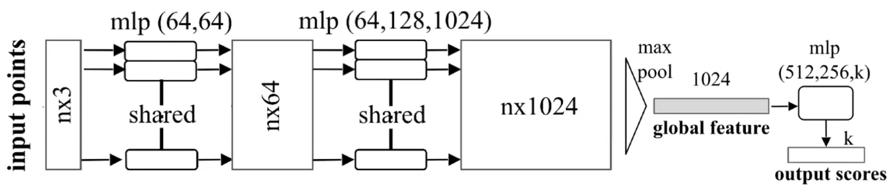
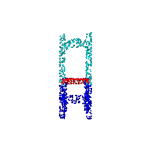
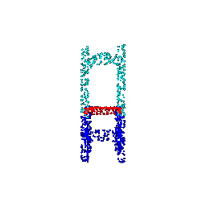

# Pointcloud Classification Pointcloud classification using PointNet is straightforward: pass the global feature through fully connected layers and a softmax layer to obtain the class probabilities. The test accuracy of the trained model for classifying three classes (chair, vase, lamp) was 96.33%. The following figures show the predicted classes for input point clouds, as well as some failure cases. The failure cases are understandable. For example, the chair in the first failure case does not look like a conventional chair, and the vase in the second failure case has a long structure which can be mistaken for a lamp. The third failure case can also be explained by the fact that the four protruding structures may represent plants in a vase. Class | Example 1 | Example 2 | Example 3 | Failure Case :---:|:---:|:---:|:---:|:---: **Chair** | | | | **Vase** | | | | **Lamp** | | | | # Pointcloud Segmentation A simple trick is used to perform pointcloud segmentation using PointNet: Concatenate the local embedding and the global embedding and pass it through fully connected layers to obtain the class probabilities for each point. This is illustrated in the diagram below:The test accuracy of the trained model for segmenting six semantic classes for a chair was 90.12%. The following visualizations show the predicted classes for input point clouds, as well as some failure cases. Failure Case 4 missclasified the legs of the chair (blue), as the chair is a sofa and doesn't have a clear boundary. For Failure Case 5, the model it seems like the ground truth is not correct by labeling the entire sides as arm rests (yellow) rather than chair legs (blue). | Case 1 | Case 2 | Case 3 | Failure Case 4 | Failure Case 5 :---:|:---:|:---:|:---:|:---:|:---: **Ground Truth** | | |
 | |
**Prediction** | | |
| |
**Prediction** | | |  | |
**Accuracy** | 94.65% | 88.90% | 91.79% | 47.53% | 40.85%
# Robustness Analysis
Two experiments were conducted to assess the robustness of a learned model.
The first experiment involved rotating the input point clouds at varying angles,
and the second experiment involved varying the number of points in the input point clouds.
The accuracy of the model was reported in both experiments,
and the results were presented quantitatively and qualitatively in the figures provided below.
The findings revealed that both classification and segmentation models were similarly sensitive to rotation,
with accuracy decreasing linearly as the rotation angle increased.
However, the classification model proved more robust to the number of points as compared to the segmentation model.
Notably, the accuracy of the classification model remained relatively consistent until the number of points dropped below 100,
whereas the segmentation model showed a similar trend when the number of points dropped below 1000.
| |
**Accuracy** | 94.65% | 88.90% | 91.79% | 47.53% | 40.85%
# Robustness Analysis
Two experiments were conducted to assess the robustness of a learned model.
The first experiment involved rotating the input point clouds at varying angles,
and the second experiment involved varying the number of points in the input point clouds.
The accuracy of the model was reported in both experiments,
and the results were presented quantitatively and qualitatively in the figures provided below.
The findings revealed that both classification and segmentation models were similarly sensitive to rotation,
with accuracy decreasing linearly as the rotation angle increased.
However, the classification model proved more robust to the number of points as compared to the segmentation model.
Notably, the accuracy of the classification model remained relatively consistent until the number of points dropped below 100,
whereas the segmentation model showed a similar trend when the number of points dropped below 1000.
Case 1 | Case 2 | Case 3 | Case 1 | Case 2 | Case 3 :---:|:---:|:---:|:---:|:---:|:---:|:---:|:---: Angle: 0 degrees | | | Angle: 60 degrees | | | | | | | Angle: 120 degrees | | | Angle: 180 degrees | | | | | | |
 Case 1 | Case 2 | Case 3 | Case 1 | Case 2 | Case 3
:---:|:---:|:---:|:---:|:---:|:---:|:---:|:---:
Num Points: 10k | | | Num Points: 1000 | |
| | |  | |
Num Points: 500 | | | Num Points: 100 | |
|
Case 1 | Case 2 | Case 3 | Case 1 | Case 2 | Case 3
:---:|:---:|:---:|:---:|:---:|:---:|:---:|:---:
Num Points: 10k | | | Num Points: 1000 | |
| | |  | |
Num Points: 500 | | | Num Points: 100 | |
|  | | | |
| | | |